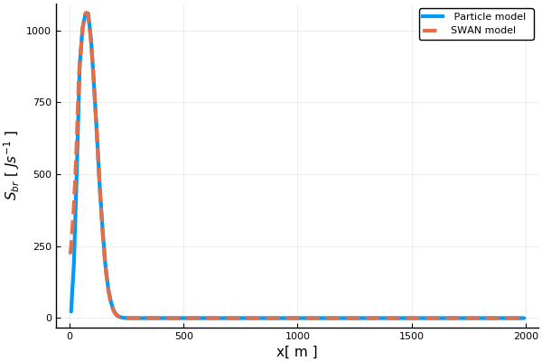
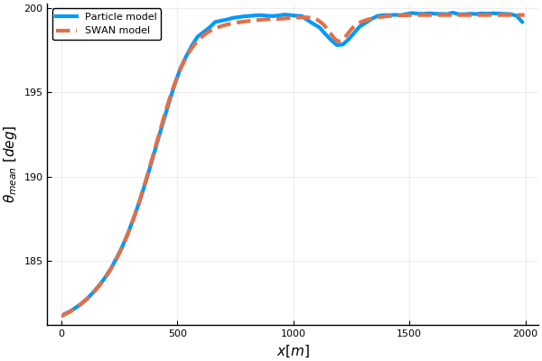
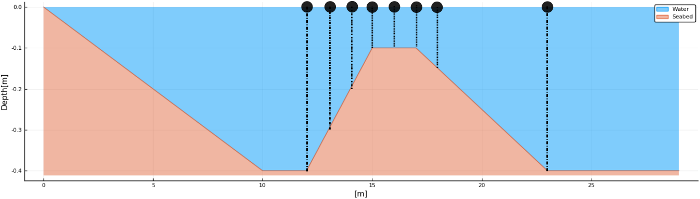

A
Particle-based Approach for
Stochastic Modelling of Waves
in the Near-shore Region
29th August, 2019
Shriram Ravindra Ashirgade
Ad Reniers
Arnold Heemink
Marlies van der Lugt
Jacco Groeneweg
Introduction
Introduction
Near-shore region
- Wave dynamics depend on the depth
- Processes occur at small spatial and temporal scale
- Approximate modelling of these processes
- Uncertainties in the measurements
Dominant processes in the Near-shore

Problem statement
\begin{align} \dfrac{\partial E(\mathbf{x},t)}{\partial t} + \nabla.(E(\mathbf{x},t)\mathbf{C}(\mathbf{x},t)) = S(\mathbf{x},t) \end{align}
Existing Models
- Takes deterministic approach
- Requires high resolution
- Tends to be computationally expensive
- Do not handle uncertainties implicitly
New Stochastic Approach
- Solving same equations with different approach
- Computationally less expensive
- Can work with low resolution
Particle dual of wave
|
Wave |
$\iff$ |
Particle |
$\mathbf{x} = [ x, y, \theta, \omega; e ]$
Step-1

Sample particles at the boundary
Step-2

Propagate particles in the domain and update energy
Step-3

Estimate energy density and wave properties
Model Description
Model Description
Energy Distribution

Interpretation of Energy Density
\begin{align} E(\mathbf{x},t) = E_{0}(t).\varphi(\mathbf{x},t) &= E_{0}(t).\varphi(\mathbf{x}_p,t).\varphi(\mathbf{x}_s,t|\mathbf{x}_p) \\ \\ \mbox{where} \ \ \mathbf{x}_p = [x,y]^T, \ & \ \mathbf{x}_s = [\theta,\omega]^T \end{align}
Generalized Setting
\begin{align} \mathbf{x}= [x,y,\theta,\omega; e]^T, \quad \mathbf{C} = [C_x,C_y,C_\theta,C_\omega]^T \end{align}
Domain: $R \subseteq \mathbb{R}^4$, Boundary: $\partial R$
Velocity field $\mathbf{C}$ is derived from Shoaling and Refraction models
Equations to be solved
\begin{align} \dfrac{\partial E(\mathbf{x},t)}{\partial t} + \nabla.(E(\mathbf{x},&t)\mathbf{C}(\mathbf{x},t)) = S(\mathbf{x},t) \\ &\Downarrow \\ \frac{\partial}{\partial t}\varphi(\textbf{x},t) + \nabla.&(\varphi(\textbf{x},t)\mathbf{C}) = 0 \end{align}
$ E_{h}(\mathbf{x},t) = E(t)\varphi(\textbf{x},t)$ $\ \ \ \leftrightarrow \ \ \ S(\mathbf{x},t) = 0$
Accommodating Source/Sink Term
\begin{align} E(\mathbf{x},t) = E_h(\mathbf{x},t)w(\mathbf{x},t) \\ \end{align}
\begin{align} &\quad\quad\downarrow \\ \frac{d e}{d t} = e&\frac{S(\textbf{x},t)}{E(\textbf{x},t)} = e\lambda(\mathbf{x},t) \end{align}
\begin{align} &\downarrow \\ e(t) =& e_0\exp\left(\lambda t\right) \end{align}
Dissipation Terms
Bottom friction \begin{align} \lambda_{fric} = \frac{ S_{fric}(\textbf{x},t)}{E(\textbf{x},t) } = -C_b \frac{\omega^2}{g^2\sinh^2(kd)} \end{align}
Depth-induced wave breaking \begin{align} \lambda_{br} = \frac{ S_{br}(\textbf{x},t)}{E(\textbf{x},t) } = -\frac{\alpha\rho g \big[ Q_0\bar{f}_0 H_{max}^2 \big]_{\textbf{x}_p,t}}{4E(\textbf{x}_p,t)} \end{align}
Picard's iteration
| Set $\lambda_{br}^i = \frac{S_{br}^{i-1}}{E^{i-1}}$ |
Estimate $S_{br}^{i}, $ $ E^{i}$ $i$++ |
Stop when $E^{i}\approx E^{i-1}$
The Algorithm
- Discretize time in $t_1,t_2,\dots$
-
For $i = 1,2,\dots$ do:
- Sample $\mathbf{x}$ from $E(\mathbf{x},t_i)|_{\partial R}$
- Evaluate $e$
- Update every $\mathbf{x}$
- Update $e$ if possible
-
For each iteration do:
- Estimate $E, S$
- Estimate $\lambda$
- Update $e$
- Estimate energy density and wave properties
|
|
$\Bigg\}$ | Particle path computation |
|
|
$\Bigg\}$ | Picard's Iteration |
Results
Gently Sloping Beach
Bathymetry
Boundary Conditions
$T_{peak}=10s;\quad$ $H_s=5m$
• Sinusoidal waves, $\theta=180^o$,
• Sinusoidal waves, $\theta=200^o$,
• Sinusoidal waves, $\theta\sim \cos^2$,
• Waves from Pierson-Moskowitz spectrum
Aim
- Test the implementaiton of Shoaling, Refraction and Depth-induced breaking
- Evolution of spectrum
- Convergence of Picard's iterations
- Computational cost
Shoaling
Estimation of wave height
Refraction
| Particle path | $\theta$ |
Spectral distribution
| $T_{mean}$ | $T_{rms}$ |
Particle density
High density in the shallow region
Directional distribution
| $\theta_{mean}$ | $std(\theta)$ |
Depth-induced wave breaking
| $H_s$ | $S_{br}$ |
Convergence behaviour
$\%$ change in average energy density
Computational Time
| Monochromatic wave |
Waves from a spectrum |
||
|---|---|---|---|
| SWAN Model | 80s | 270s | |
| Particle Model | Ray Computation | 2s | 50s |
| Time per iteration | 0.8s | 10s | |
| Total time till convergence |
10s | 150s | |
Shallow Flume
Bathymetry
Boundary condition
Sinusoidal waves with $T=2.5s, \ $ $ H_s=0.1m, \ $ $ \theta=200^o$
Aim: To test the implementation of bottom frictionWave height and direction
| $H_s$ | $\theta_{mean}$ |
Dissipation rate
| $S_{br}$ | $S_{fric}$ |
Sigmoid Bathymetry
Bathymetry
Boundary Condition
$T_{peak}=10s;\quad$ $H_s=5m;\quad$ $\theta_{peak}=200^o$
$\omega \sim$ PM spectrum;$\quad$ $\theta\sim\cos^2$
Wave height and convergence
| $H_s$ | Convergence |
Dissipation rate
$S_{br}$
Evolution of spectrum
| $T_{mean}$ | $\theta_{mean}$ |
Computational Time
| Time | ||
|---|---|---|
| SWAN Model | 330s | |
| Particle Model | Ray Computation | 50s |
| Time per iteration | 40s | |
| Total time till convergence |
1250s | |
Accuracy v/s Speed
| Parameters | Total time | |
$dt=1s, N=1000$ $1250s$ |
$dt=5s, N=1000$ $250s$ |
$dt=5s, N=500$ $120s$ |
Flow Over Trapezoidal Bar
Bathymetry
 Bathymetry with trapezoidal shoal and wave gage locationsAim
To test the model against lab experiments and identify additional dominant processes
Wave height

Wave frequency
Flow Over an Elliptic Shoal
Bathymetry
 Two dimensional case
Two dimensional case
Sinusoidal waves with $T=1s$
Traced Rays
Normalised wave height
Conclusions
Conclusions
- Implementation
- From waves to particles
- Shoaling
- Refraction
- Bottom friction
- Depth-induced breaking
- Iterative approach for breaking
- Accuracy of the solution
- At par with SWAN and analytical solution
- Explainable numerical discrepancies
- Monochromatic as well as wave spectrum
- Convergence of iterative scheme
- Small error in shallower region
- Computational Cost
- Comparable with SWAN
- Depends on the bathymetry
- Depends on number of particles and time-step used
- Accuracy-Speed tradeoff
- Scope of numerical optimization
- Additional Processes
- Non-linear wave interactions
- Diffraction
Future Scope
Future Scope
- Implementation of additional processes
- Diffraction and non-linear interactions
- Reflection
- Wave growth by wind
- White capping e.t.c
- Different formulation of these processes
- Random walk model of Diffraction
Current implementation

Random walk
- Numerical Optimization
- Sophisticated sampling methods e.g. importance sampling, stratified sampling etc.
- Adaptive time-stepping
- Efficient modelling of particle interactions
- Parallelization and memory management
- Uncertainty Quantification
- Quantifying estimation error
- Combining with measurement and modelling uncertainties
Thanks for all the fish
Questions?
Dispersion relation
\begin{align}\label{eqn:dispersion} \omega^2 = gk\tanh(kd) \end{align} \begin{align*} c = \frac{\omega}{k} = \sqrt{\frac{g}{k}\tanh{kd}}, \quad c_g = \frac{\partial\omega}{\partial k} = n.c \quad n = \frac{1}{2}\left( 1 + \frac{2kd}{\sinh{2kd}} \right) \end{align*}
Particle dynamics
\begin{align*} C_x = \frac{dx}{dt} &= c_g\cos(\theta) && C_y = \frac{dy}{dt} = c_g\sin(\theta) \\ C_\theta = \frac{d\theta}{dt} &= -\frac{c_g}{c}\frac{\partial c}{\partial \mathbf{m}} && C_\omega = \frac{d\omega}{dt} = 0 \\ C_e = \frac{de}{dt} &= \lambda e \end{align*}
Particle energy
\begin{align} U_i = \int_{\partial R} E(\mathbf{x},t_i). \end{align} \begin{align}\label{eqn:E_per_particle} e_i^j = u_i^j\textbf{C}_i^j.\textbf{n}_i^j\Delta t = \frac{U_i}{N_i}\textbf{C}_i^j.\textbf{n}_i^j\Delta t. \end{align} \begin{align*} \int_{\partial R} E(\textbf{x},t_i)\textbf{C}(\textbf{x},t_i).\textbf{n} &= \lim_{\substack{N_i\rightarrow\infty\\ \Delta t \rightarrow 0}} \ \frac{1}{\Delta t}\sum_{j=1}^{N_i} e_i^j. \end{align*}
Sampling strategy
\begin{align*} Y&\sim\varphi(y|x=x_{max}) = Uni(0,y_{max}) (\mbox{Uniform distribution}), \\ \Theta&\sim\varphi(\theta|x=x_{max},y) = D(\theta) ( \ i.e. \ \cos^2 \ \mbox{distribution}), \\ \Omega&\sim\varphi(\omega|x=x_{max},y) = \mbox{PM / JONSWAP spectrum}. \end{align*}
Estimation of wave properties
\begin{align*} \omega_{mean} = \frac{1}{E_{\Delta R}}\left[{ \sum_{i:\textbf{x}_i\in \Delta R } e_i\omega_i}\right], \quad ~~ ~~ \omega_{rms}^2 = \frac{1}{E_{\Delta R}}\left[{ \sum_{i:\textbf{x}_i\in \Delta R } e_i\omega_i}^2\right] \end{align*} \begin{align*} \theta_{mean} = \frac{1}{E_{\Delta R}}\left[{ \sum_{i:\textbf{x}_i\in \Delta R } e_i\theta_i}\right], \quad \theta_{rms}^2 = \frac{1}{E_{\Delta R}}\left[{ \sum_{i:\textbf{x}_i\in \Delta R } e_i\theta_i^2}\right] \end{align*}